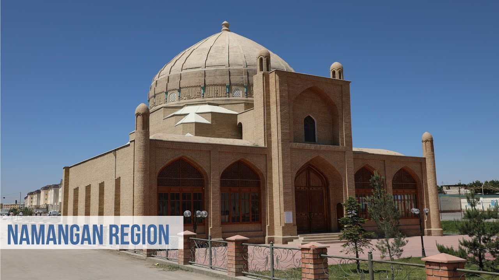

Namangan Viloyati
Namangan viloyati — Oʻzbekiston Respublikasi tarkibidagi viloyat. 1941-yil 11-martda tashkil etilgan (1960-yil 25-yanvarda Andijon va Fargʻona viloyatlari tarkibiga qoʻshib yuborilgan. 1967-yil 18-dekabrda kayta tashkil etildi). Namangan viloyati respublikaning sharqida, Fargʻona vodiysining shimoli-gʻarbiy qismida, Tyanshan togʻ tizmasi tarmoklari – Qurama va Chatqol togʻlarining yon bagʻrida joylashgan. Shimoliy va shimoli-sharkdan Qirgʻiziston Respublikasining Jalolobod viloyati, jan.-sharqsan Andijon, janubidan Fargʻona, shimoliy va shimoli-gʻarbdan Toshkent viloyati va Tojikistonning Sugʻd viloyati bilan chegaradosh. Maydoni 7,44 ming km². Aholisi 2867,5 ming kishi (2021). Namangan viloyatida 11 qishloq tumani (Kosonsoy, Mingbuloq, Namangan, Norin, Pop, Toʻraqoʻrgʻon, Uychi, Uchqoʻrgʻon, Chortoq, Chust, Yangiqoʻrgʻon), 8 shahar (Namangan, Kosonsoy, Pop, Toʻraqoʻrgʻon, Uchqoʻrgʻon, Chortoq, Chust, Haqqulobod), 11 shaharcha (Jomashoʻy, Toshbuloq, Navbahor, Oltinkon, Uygʻursoy, Chorkesar, Xalqobod, Uychi, Oʻnhayat, Yangiqoʻrgʻon, Oqtosh), 99 qishloq fuqarolari yigʻini bor. Markazi – Namangan shahri.Viloyat hududining asosiy qismi Sirdaryoning oʻng sohilida, keng Fargʻona vodiysida joylashgan. Yer yuzasi, asosan, tekislik boʻlib, shimoliyda qator tepaliklar va Chatqol hamda Qurama togʻlari bilan oʻralgan. Balandligi 350–800 m. Togʻ va adirlar, tor vodiylar, vohalar toʻrtlamchi geologik davrning katta-kichik daryolari va irmoqlarning faoliyatidan hosil boʻlgan. Viloyat hududi geologik faol zonada joylashgan va 8 ballgacha-zilzilalar boʻlib turadi. Keng maydonni egallab yotgan va dehqonchilik obʼyekti boʻlgan Qoraqalpoq choʻli neogen davrida paydo boʻlgan. Foydali qazilmalardan Chodak oltin koni, togʻ kvarsi, sur-ma, mis, neft, gips, ohaktosh va boshqa qurilish materiallari, shifobaxsh mineral suvlar (Chortoqda) topilgan. Chust-Pop yer osti suvining issiqligi 50° (1300 m dan chiqadi). Suv tarkibida yod va brom bor. Chodaksoydan (450 m chuqurlikdan) 23° issiklikdagi vo-dorod-sulfidli suv chiqadi. Chortoq, Shahand, Kosonsoy, Uchqoʻrgʻon suvlari oʻzining minerallanish darajasi va harakteri boʻyicha mashhur Matsesta, Chakrak, Tal suvlaridan qolishmaydi. Yer osti suvlari togʻ, adir, togʻ oldi botiqlarida va yoyilmalarda yirik toshli, shagʻalli va qumli qatlamlarda joylashgan. Sirdaryoga yaqin zonalarda yer osti (sizot) suvlari mavjud. Ikli-mi keskin kontinental. Yozi uzok,, issiq, qishi qisqa, nisbatan sovuq. Yillik oʻrtacha temperatura 13°. Yanvarda temperatura –25° gacha pasayadi, iyunda 35–45° ga yetadi. Vegetatsiya davri 229 kun. Viloyatning turli qismlarida yogʻin miqdori turlicha. Namanganda oʻrtacha yillik yogʻin miq-dori 230 mm, gʻarbida 90–190 mm, sharkiy tumanlarida 300–400 mm, togʻ etaklarida 600 mm. Yogʻinning eng koʻp kismi bahor va kuzda yogʻadi. Daryolari yogʻindan, togʻlardagi qor va muzliklardan suv oladi. Namangan viloyatida 16 dare va soy, koʻplab mavsumiy soylar mavjud. Eng katta daryosi – Sirdaryo. U Norin va Qoradaryoning qoʻshilishidan hosil boʻladi. Norin va Sirdaryoga Chatqol togʻlaridan oqib tushadigan Pochchaotasoy, Chortoksoy, Chustsoy, Olmossoy, Chodaksoy, Gʻovasoy, Kosonsoy, Namangansoy kabi sersuv togʻ daryolari kuyiladi. Kosonsoy, Chortoq, Eskiyer suv omborlari, Oxunboboyev, Shimoliy Fargʻona, Katta Namangan kanallari qurilgan. Bahor va yoz boshlarida sodir boʻladigan sel hodi-salaridan saqlanish uchun sel omborlari barpo qilingan. Tuproklari pro-lyuvial, oʻtloq, oʻtloqi-botqoq, och tusli boʻz, ayrim joylarda shoʻrxok, och tusli qoʻngʻir, jigarrang. Adirlar qumtosh, mergel, lyoss va chagʻirtoshlar bilan qoplangan. Bahorda efemer oʻsimliklar oʻsadi, chorva mollari boqiladi. Tekislik qismlarida boʻz, koʻngʻir tuproqlar, qadimdan dehqonchilik qilib kelingnidan tabiiy holati oʻzgargan va unumdorligi oshirilgan. Kosonsoyda tipik va qoramtir boʻz tuproq, Namangan, Uchqoʻrgʻon, Chust tumanlarida och boʻz tuproq tarqalgan. Tekislik qismining ekin ekilmaydigan yerlarida shoʻra, shuvoq, lola, otquloq, Sirdaryo boʻylarida betaga, astragal va boshqa oʻsadi. Togʻlarda archazorlar, yovvoyi olcha, olma va yongʻoqzorlar uchraydi. Togʻlarning baland qismi subalp oʻtloklari – yozgi yaylovlardan iborat. Namangan viloyatida deyarli oʻrmon yoʻq. Namangan mevali oʻrmon koʻchatzori va Namangan oʻrmon koʻchatzori mavjud. Choʻl va adirlar oʻzlashtirilib yuborilgandan boʻri, tulki, qobon, yumronqoziq kam uchraydi. Togʻlarda togʻ takasi, sugʻur bor. Adirlarda kalamush, dala sichqoni, echkemar, tipratikan, choʻl toshbaqasi, turli xil ilon va kaltakesak koʻp. Qushlardan burgut, kaklik va boshqa bor. Qorabovur, yovvoyi oʻrdak va boshqa ovlanadi. Dare, soy va boshqa suv havzalarida har xil baliq yashaydi, ondatra keng tarqalgan. Pochchaotasoy, Gʻovasoyda qunduz ham uchraydi. Namangan viloyati xududining intensiv oʻzlashtirilishi oqibatida sudralib yuruvchilar, qushlar, sut emizuvchilar, baliklarning koʻp turlari kama-yib bormoqda.
Aholining asosiy qismini oʻzbeklar (87,8%) tashkil etadi, shuningdek, tojik (9,0%), kirgiz (1,0%), rus (0,8%), tatar, ukrain, ozarbayjon, yahudiy, belarus, arman, qozoq va boshqa millat vakillari ham (jami 89 millat) yashaydi. Aholi zichligi oʻrtacha 1 km² ga 266 kishi. Qishloq aholisi 1238,9 ming kishi, shaharliklar 743,8 ming kishi (2002).
Arxeologiyasi
Olmosning Tarixi milodiy 4-5 asrlarga borib taqaladi. O'sha kezlarda Olmosda 800 atrofidagi qabila yashagan,asosiy mashg'ulotlari dehqonchilik va chorvachilik bo'lgan,aholi o'sha kezlarda Tog' atrofida, soy va buloqlar atrofida yashagan.
Xoʻjaligi
Namangan viloyati respublika ishlab chiqarish va madaniy taraqqiyotida yetakchi oʻrinlardan birini egallaydi. Viloyat sanoatining asosiy tarmoqlari: mashinasozlik, elektrotexnika, kimyo, paxta tozalash, oziq-ovqat sanoatlari. Namangan viloyatida 170 dan ziyod sanoat korxonalari mavjud. Eng yirik sanoat korxonalaridan – mashinasozlik, avtomobillarni tuzatish, gʻisht, yogʻ-ekstraksiya, paxta tozalash, oziq-ovqat (vino zavodi, pivo kombinati, "Namangan salqin ichimliklari", "Rohat", "Namangankonserva", "Shirinlik", "Kosonsoykonserva" korxonalari), kimyo, "Elektroterm" ishlab chiqarish birlashmasining yetakchi korxonasi, ipak gazlamalar kombinati, badiiy buyumlar fabrikasi va h.k. 3402 kichik, 249 shirkat, 76 qoʻshma korxona faoliyat koʻrsatmoqda. Shular orasida: "Navroʻz" Oʻzbekiston–Kanada, "Shohi Soʻzana", "Nestle-Oʻzbekiston", "Shams LTD", "Hyp", "Ohangar", "Chust pichogʻi", "Namanganshina", "Kosonsoy-Tekmen", "Popfen", "Silk-Road", "Kasmir Deri", "Namanganqogʻoz", "Yanis IV", Oʻzbekistan– Rossiya "Kemtosh", "Shifo" korxonalari, Oʻzbekiston–Xitoy "Channa-Tekstil" qoʻshma korxonasi, Oʻzbekistan–Turkiya "Ko-sonsoytekstil" va boshqa bor.
Qishloq xoʻjaligi
Viloyat qishloq xoʻjaligining asosiy tarmoqlari: Donchilik, paxtachilik, sabzavotchilik, bogʻdor-chilik va uzumchilik, goʻsht-sut chorvachiligi, pillachilik. Namangan viloyati mamlakatda yetishtirilayotgan pax-taning 8–9% ini beradi. Gʻallakorlik, polizchilik, tokchilik, sabzavotchilik, ipakchilik va chorvachilik rivojlangan. Tekislikdagi sugʻoriladigan tu-manlarda chorvachilik, asosan, kora-mol, togʻ oldilaridagi tabiiy oʻtloqlarda qoʻy va echki (jumladan, mayin junli) boqiladi. Qishloq xoʻjaligida foydalaniladigan yerlar maydoni 548,1 ming ga, shundan haydaladigan yerlar 219,8 ming ga, yaylovlar 287,9 ming ga, bogʻ va koʻp yillik daraxtzorlar 31,2 ming ga, tokzorlar 8,7 ming ga ni tashkil qiladi. Don ekinlari 80,4 ming ga, paxta 109,5 ming ga, kartoshka 1,3 ming ga, sabzavot 3,5 ming ga, poliz ekinlari 1 ming ga, ozuka ekinlari 14,4 ming ga maydonni egallaydi, 7760 ga oʻrmonzor, 3 ming ga tutzor bor (2001). Yerning meliorativ holatini yaxshilash maqsadida 4 ming km kollektor drenaj tar-moklari qurilgan. Viloyatning hamma tumanlarida sugʻoriladigan maydonning asosiy qismida paxta va don ekinlari ekiladi. Namangan viloyatida 134 shirkat xoʻjaligi, 94,8 ming dexdon xoʻjaligi, 3,5 ming fermer xoʻjaligi bor. Jamoa va xususiy xoʻjaliklarda 667,1 ming qoramol (shundan 261,4 mingi sigir), 899,3 ming kuy va echki, 5,8 ming ot mavjud, par-randachilik bilan qam shugʻullaniladi.
Namangan viloyatida obikor dehqonchilik ustun turadi. Viloyat hududida koʻplab sugʻorish inshootlari - Shimoliy Fargʻona, Oxunboboyev nomli, Chust, Chortogʻ kanallari, Oʻrtatoʻqay suv ombori(Kosonsoy daryosida) va boshqalar qurilgan. Irrigatsiyaning rivojlanishi obikor yerlarni kengaytirish va melioratsiya holatini yaxshilash imkonini berdi. Barcha ekin maydonlarining 27 foizidan koʻprogʻiga paxta ekiladi. Pop va Chust tumanlaridagi yaylovlarda qoʻy va echki koʻp boqiladiasdsa. Qoramol hamma dehqonchilik tumanlarida boqiladi. Yaylovlar yetishmaganidan koʻpgina xoʻjaliklar mollarni yozda togʻ yaylovlariga haydab boradilar. Pillachilik paxtachilik bilan birga rivojlantirilmoqda.
Transporti
Transport yoʻlilarning uzunligi 138 km. Avtomobil yoʻllari uzunligi 1,7 ming km (shu jumladan, qattiqqoplamalisi 1,6 ming km). Trolleybus liniyasi uzunligi 80 km. Namangan bilan Toʻraqoʻrgʻon shaharlari oraligʻida ham trolleybus qatnovi yoʻlga qoʻyilgan. Andijon–Koʻqon, Namangan–Uchqoʻrgʻon oʻrtasida poyezdlar qatnaydi. Namangan–Toshkent, Namangan–Margʻilon–Fargʻona, Namangan– Andijon, Namangan–Qoʻqon–Samarqand yoʻnalishida avtobuslar qatnovi yoʻlga qoʻyilgan. Fargʻona vodiysini respublika poytaxti bilan bogʻlovchi Toshkent–Oʻsh avtomobil yoʻlining Kamchiq dovonida uzunligi 358 va 891 m dan iborat boʻlgan ikkita tonnel qurilib foydalanishga topshirildi. Namangan viloyati havo transportining rivojlanishi 1941-yilda aerodrom qurish bilan boshlandi. 1984-yilda zamonaviy havo laynerlariga xizmat qiluvchi uchish va qoʻnish maydoni ishga tushirildi. Oʻrta Osiyo davlatlaridagi shaharlar, shuningdek, Rossiya Federatsiyasining Moskva, Sankt-Peterburg, Yekaterinburg, Ufa, Simferopol, Novosibirsk, Magadan, Norilsk, Yakutsk, Krasnoyarsk, Mirniy kabi shaharlari va Ukraina poytaxti Kiyev shahri bilan muntazam aloqa yoʻlga qoʻyildi.
Madaniy-maorif, sogʻliqni saqlash va sport
2000/2001 oʻquv yilida viloyatda 671 umumiy taʼlim maktabi (493,4 ming oʻquvchi), 19 ta litsey, 6 maxsus maktab-internat, 3 ta akademik litsey (1350 oʻquvchi) faoliyat koʻrsatdi.
Viloyatdagi 3 ta oliy oʻquv yurti (Namangan universiteti, Namangan muxandislik-texnologiya va Namangan muhandislik-qurilish institutlari)da 11 mingdan ziyod talaba taʼlim oldi (2001). 1999–2001-yillar mobaynida barcha qulayliklarga ega boʻlgan jami 28 kasb-hunar kolleji (18 ming 875 oʻquvchiga moʻljallangan) hamda 2 akademik litsey (1500 oʻrin) bunyod etildi. Ular zamonaviy oʻquv qurollari va texnika bilan jihozlandi. Viloyat oʻquvchilari Respublika miqyosida oʻtkaziladigan fan olimpiadalarida muntazam qatnashmoqdalar. Xalqaro AKSELS tanlovida gʻolib chiqib xorijiy davlatlarda tahsil olib qaytayotgan oʻquvchilar soni ham ortib bormoqda. AQShning oʻquvchilar oʻrtasida oʻtkazilgan AKSELS tanlovida Namangan viloyatidan 40 oʻquvchi ishtirok etdi. Viloyatda 2 ta (Namangan oʻlkashu-noslik va Pop arxeologik) muzey, 1 markaziy, 409 jamoat kutubxonasi (1 mln. nusxadan ortiq asar), 162 madaniyat uyi, 8 madaniyat va istirohat bogʻi, 5 teatr (shu jumladan, Alisher Navoiy nomidagi viloyat musiqali drama teatri) bor. Viloyat teatr sahnalarida Oʻzbekiston xalq artistlari R. Hamroyev, M. Azizova, S Rahmonov, M. Mansurov, M. Ubaydullayev, X. Oxunova, Oʻ. Nuraliyev, K. Rahimovlar; Oʻzbekistonda xizmat koʻrsatgan artistlar: M. Dadaboyev, A. Raximov, A. Tojiboyeva, M. Isomiddinov, T. Saydullayevlar samarali ijod qildilar (2001-yilda teatr binosi rekonstruksiya qilindi).
Xalq hunarmandchiligi ayniqsa, Namangan va Chuyet shaharlarida qadimdan rivojlangan. Chustda pichoq, idish-tovoq, qishloq xoʻjaligi qurollari ishlab chiqariladi, doʻppidoʻzlik, kashtachilik bilan shugʻullaniladi, xalatlar uchun beqasam va atlas gazlamalar toʻ-qiladi. Chust badiiy buyumlar fabrikasi bor. Sogʻliqni saqlash. Namangan viloyatida 11 650 oʻrinli 115 kasalxona, 250 dan ortiq dorixona, Respublika shoshi-linch tibbiy yordam markazining fi-liali, kuniga 30 ming bemorni qabul qilish quvvatiga ega boʻlgan 256 ambulatoriya-poliklinika muassasasi ishlab turibdi. Namangan viloyatida oʻtgan 10 yil mobaynida 104 qishloq shifokorlik punktlari barpo etildi, 41 qishloq shifokorlik ambulatoriyasi va feldsher-akusherlik punktlari qishloq shifokorlik punktlariga aylantirildi. Shu davrda 1505 oʻrinli kasalxona, bir smenada 43,7 ming bemorni qabul qiluvchi poliklinikalar qurib bit-kazildi, shoshilinch tibbiy yordam markazi, viloyat koʻp tarmoqli kasalxonasi, viloyat kardiologiya markazi, oʻsma kasalliklar, Namangan shahar onalar va bolalar fizioterapevtik, yuqumli kasalliklar kasalxonalari foydalanishga topshirildi. Ular zamonaviy tibbiyot apparatlari, asbob-uskunalar bilan jihozlandi. Namanganda Semashko nomidagi respublika fizioterapevtik ilmiy tadqiqot instituti, respublika akusherlik va ginekologiya ilmiy tadqiqot instituti hamda respublika Salomatlik institutlarining viloyat filiallari, nevrologiya, endokrinologiya va urologiya markazlari faoliyat koʻrsatmoqda.
Viloyatda onalik va bolalikni muhofaza qilish boʻyicha "Somom avlod" dasturi asosida 2000-yildan boshlab "Delfin", "Viktor" va boshqa zamonaviy apparatlar bilan jihozlangan "Ona va bola" skrining markazi ishlab turibdi. 6 sanatoriy (jumladan, "Chortoq", "Gulshan", "Kosonsoy"), Koʻksaroy dam olish zonasi mavjud.
Sport
Viloyatdan sportning futbol, basketbol, voleybol, suv polosi, chim ustida xokkey, mini futbol, qoʻl toʻpi, shaxmat turlari boʻyicha sportchilar mamlakat musobaqalarida muvaffaqiyatli ishtirok etib kelmoq-dalar. Namangan viloyatini Oʻzbekiston Super ligasidagi bahslarda "Navbahor" futbol klubi doimiy ishtirok etib kelmoqda. Namanganda markaziy stadioni(20 mingdan ziyod oʻrinli), shuningdek, 28 stadion, "Pahlavon", "Dinamo", "Alpomish", "Sogʻlom avlod" sport majmualari, 22 su-zish havzasi, 54 tennis korti, 1 velotrek, 2 otchopar, 473 sport zali, 305 otish tiri, 571 basketbol, 1754 voleybol, 375 qoʻl toʻpi, 422 kichik va 563 katta futbol maydon va maydonchalari bor. 590 mingdan ziyod kishi jismoniy tarbiya va sport bilan shugʻullanadi. Ularning 260 ming nafaridan ortigi oʻsmirlar. Namangan dovrugini oshirgan va anʼanaga aylangan "Universiada-2000" tadbiri katta umumxalq bayrami sifatida keng nishonlandi. Shaxmat, charm toʻp buyicha Osiyo, jahon chempionatlari, saralash musobaqalari, tennischilarning "Buyuk ipak yoʻli", "Satellit", "Fyuchers" kabi turlarining oʻtkazilishi Namanganni dunyoga yana ham kengroq tanitdi. Namangan shahrining Davlatobod tumanidagi "Navbahor" stadioni, "Doʻstlik" tennis majmuasi, "Yoshlik" suzish havzasi, Namangan shahridagi "Paxlavon", "Alpomish", "Dinamo" sport majmualari, Toʻraqoʻrgʻon tumanidagi "Kurash" majmuasi kabi sport inshootlarida xalqaro mavqedagi sport musobaqalari oʻtkazib turiladi. Namangan viloyatida 15 xalqaro toifadagi sport ustasi, 900 dan or-tiq sport ustasi, 2400 sport ustaligiga nomzod, 5000 dan ziyod 1-toifadagi sportchi tayyorlandi. Viloyatning 200 dan ortiq sportchisi Oʻzbekiston milliy terma jamoalari aʼzolaridir. Namangan viloyatidan 2000-yilda boks boʻyicha respublika chempioni, stol tennisi, shaxmat va boshqa sport turlari boʻyicha xalqaro musobaqa sovrindorlari yetishib chiqdi. Namanganda oʻtkazilgan 18 yoshgacha boʻlgan yoshlar oʻrtasida belbogʻli kurashchilarning 5-Xalqaro birinchiligida Qirgʻiziston, Qozogʻiston, Turkmaniston. Armaniston, Gruziya, Ukraina, Belarus, Rossiya, Hindiston va Turkiya sportchilari ishtirok etdi. "Umid nihollari", "Barkamol avlod", "Universiada" musobaqalarida oʻquvchitalabalar faolligi tobora oshib bormoqda. 2000-yilgi Universiadada Namangan viloyati sportchilari birinchi oʻrinni olishdi. 2001-yil "Barkamol avlod" musobaqalarida Fargʻonada 2-oʻrinni, 2002-yil Far-gʻonada oʻtkazilgan "Umid nihollari" musobaqalarida faxriy uchinchi urinni egalladi. "Alpomish", "Barchinoy" testlariga 500 mingga yaqin oʻquvchi, 30 mingga yaqin talaba, ishchixizmatchi jalb qilindi. Kattalikda respublikada 2-oʻrinda turgan (36 ming oʻrinlik) "Navbahor" stadioni negizida maxsus futbol maktabi, "Olimpiya zaxiralari" sport maktabida basketbol, voleybol, qoʻl toʻpi boʻyicha sportchilar tayyorlanmoqda. Namanganda "Gulbahor" ayollar futbol jamoasi faoliyati ravnaq topayapti. Toshbuloqlik yosh karatechi Doston Turgʻunov AQShda "Atlanta kubogi" sovrini musobaqalarida ishtirok etib, birinchilikni qoʻlga kiritib, oltin medal bilan qaytdi. Stol tennisi boʻyicha Sevara Qodirova 1999-yilda Shvetsiyada oʻtgan jahon yoshlar chem-pionatida jahon chempioni boʻddi. Shaxmat boʻyicha Osiyo chempionatida Olga Son 16 yoshgacha boʻlgan oʻsmirlar oʻrtasida Osiyo chempioni, yozgi biatlondan Mu-habbat Kandakova Yevropa ochiq chempionati gʻolibi, erkin kurash boʻyicha Rustam Mamajonov Osiyo kubogini, shaxmat boʻyicha xalqaro grossmeyster Saidali Yoʻldoshev Xitoyda oʻtgan Osiyo chempionati gʻolibligini, boks boʻyicha Toʻlashboy Doniyorov xalqaro musobakalar gʻolibligini, aka-uka Baxtiyor va Shuhrat Bozorovlar kurash boʻyicha Oʻzbekistonning bir necha bor mutlaq gʻolibligini va xalqaro turnirlar gʻoliblari unvonini, aka-uka Joʻra va Mutalli Mamajonovlar karate boʻyicha AQSH va Vengriyada oʻtgan xalqaro turnirlar gʻolibligini qoʻlga kiritdilar.
Adabiyoti
Namangan qadimdan xalq ogʻzaki ijodining deyarli barcha janrlariga boy oʻlkadir. Shu diyorda yaratilgan va keng tarqalgan ogʻzaki ijod namunalarini xalq qoʻshiqchilari, ertakchilari hozirgi kungacha saqlab kelganlar. Ulardan yozib olingan qoʻshiqlar, termalar, asotirlar, rivoyatlar va ertaklar bir qancha toʻplamlarga kiritilgan. Yangiqoʻrgʻon, Chortoq, Uchqoʻrgʻon, Norin, Namangan va boshqa tumanlarda xalq dostonchilik maktablari davom etgan. Uchqoʻrgʻonlik dostonchilardan 20-asrning 20-yillaridayoq "Yozi bilan Zebo" dostoni yozib olinib, keyinchalik nashr qilingan.
Yozma adabiyot Namanganda koʻhna asrlardan boshlab rivojlanib keldi. Bu oʻlka oʻz ijodiy uslubi, ovozi va soziga ega boʻlgan bir qancha isteʼdod egalarining vatanidir. Qad. Axsikent shahrida 11 – 12-asrlarda soʻz sanʼatining bir qancha yirik namoyandalari kamol top-dilar. Markazi Axsikent boʻlgan Namangan adabiy muhiti shakllanib taraqqiy eta boradi. Abu Rashid-Ahmad Axsikatiy, Abul Vafo Axsikatiylar oʻz davrining yetuk adib va olimlari edi. Yirik isteʼdod egasi Asiriddin Axsikatiy malik ush-shuaro va amiri shuaro unvonlariga sazovor boʻldi. Oʻzbek mumtoz adabiyotining namoyandasi Boborahim Mashrab shu oʻlkada voyaga yetdi. 18-asr oxiri – 19-asr 1-yarmidagi adabiyotning koʻzga koʻringan vakillari malik ush-shuaro Fazliy hamda Nodir, Gʻoziy, Majzub, Munshiy, Muxlis, Maxzun va boshqa oʻzbek adabiyoti xazinasiga salmoqli hissa qoʻshdilar. 19-asrning 2-yarmida Nodim, Shavqiy, Ibrat, Hayrat, Xilvatiy va boshqa shoirlardan iborat ijodkorlar guruhi Namanganda eʼtiborli bir adabiy muhitni vujudga keltirdi. Bu muhitda ijodiy kamolotga erishgan Muhammadsharif Soʻfizoda Oʻzbekiston soʻz sanʼatkorlari orasida birinchi boʻlib xalq shoiri faxriy unvonini oldi. Ishoqxon Ibrat va Muhammadsharif Sufizoda 20-asr boshlarida jadidchilik, milliy uygʻonish harakatining yetuk va-killari sifatida faoliyat kursatdilar. Ular uz sheʼrlarida xalqni gʻaflat va qoloklikdan chiqarish, millat ongini uygotish uchun ilm-maʼrifat zarurligini tashviq qildilar. Shoir Rafiq Moʻmin 20-asr 20-yillar sheʼriyatida erk va haqiqat kuychisi boʻlib tanildi. Benazir isteʼdod egasi Usmon Nosir oʻzbek adabiyotining yirik na-moyandalaridan edi. Zafar Diyor bolalarning sevimli shoiri bulib qoldi. Yuldosh Shamsharov, Parda Tursun oʻzbek nasri taraqqiyotida uz urinlariga ega boʻldilar. Chustiy, Shoʻxiy oʻz sheʼrlari bilan el orasida tanildi.
20-asrning 2-yarmidagi Namangan adabiy muhiti ijodkorlarga boy boʻldi. Jonrid Abdullaxonov, Turgʻun Poʻlat, Nuriddin Boboxoʻjayev, Husniddin Sharipov, Habib Saʼdulla, Dadaxon Nuriy, Ermuhammad Nurmamatov, Abdugʻani Abduvaliyev, Ahmad Tursun, Ziyoviddin Mansurov, Rustamjon Ummatov, Abdulla Jalil, Isoqjon Nishonov va boshqalar turli janrdagi asarlari bilan tanildilar. Shoir Habib Saʼdullaga Oʻzbekiston xalq shoiri faxriy unvoni berildi. Namangan adabiy muhiti umumoʻzbek adabiyotining ajralmas, tarkibiy qismi sifatida rivoj topmoqda.
Namangan viloyatida Oʻzbekiston ijodiy uyushmalarining (yozuvchilar, rassomlar, meʼmorlar, jurnalistlar va boshqalar) viloyat boʻlimlari faoliyat koʻrsatmoqda.
Matbuot, radio va televideniyesi
Namanganda 2 viloyat gazeta ("Namangan haqiqati", "Namanganskaya pravda"), 11 tuman gazeta, shahar gazetalari chiqadi. Viloyatda, shuningdek, tarmoq gazetalari va jurnallar nashr etiladi.
Namangan viloyatida dastlabki radioeshittirishlar 1932-yilda boshlangan. 1990-yildan viloyatda telestudiya tashkil etilib, telekoʻrsatuvlar berila boshladi. 2000-yilda yangi telemarkaz qurilib, foydalanishga topshirildi. Telemarkaz Germaniya "Simens" firmasining zamonaviy televideoapparaturasi bilan jihozlandi.
Meʼmorlik va arxeologik yodgorliklari. Viloyatda 85 arxeologik, 15 ga yaqin meʼmoriy yodgorlik boʻlib, shulardan kds. shahar va istehkomlar qoldiqlari: Axsikent (miloddan avvalgi 3–2-asrlar.), Munchoqtepa (jez davri), Oyritom, Mugʻtepa (antik davr) va boshqa; meʼmoriy yodgorliklardan: Jome masjidi (18-asr), Chodak madrasa-masjidi (18-asr), Shayx Ishoq Eshon (19-asr), Ota Valixon toʻra (20-asr), Haqqulobod (1903) masjidlari, Yusupxon Eshon (18-asr), Mavlono Lutfullo Chustiy (1913) meʼmoriy majmualari, Gʻoyib Nazar (1892), Mulla Qirgʻiz (1911 – 12) madrasalari, Xoʻja Amin (17-asr), Boy Hamadoniy (19-asr), Mavlono Namangoniy (1907) maqbaralari, Yusufboy Hoji uyi (20-asr boshlari) va boshqa mashhur.[2]

Bosh sahifaga qaytish